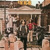
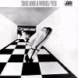
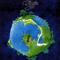
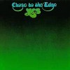
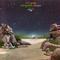
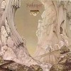
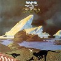
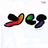
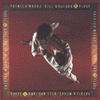

strange music page
progressive? * * * yes
#初期好き。
脱退/加入を繰り返してもう25年以上たってるみたい。
なんでもokだからイエスってバンド名なんだろーか？
明るく長いプログレです。
|
- YES
- Chris Squire
- Patrick Moraz
- Moraz & Bruford
|
#7,8年プログレ聴いてたのに今までちゃんと聴いたことの無かったイエスの1枚目。いきなり1曲目のしょぼいギターでずっこけそーになるんですけど・・・
一般的なイエスの緻密なイメージはこのアルバムには無いです。ベースがガリガリ、オルガンがショワショワ、かなりラフな感じですね（さすがにベースとコーラスは特徴的だけど）。イエスがどーこーというよりも70'sブリティッシュロックが好きならイイかも。特にラスト2曲がイイ。
個人的にはかなり好きです、Tony Kayeかっちょいい。(2002.11.2)

- Beyond And Before
- I See You
- Yesterday And Today
- Looking Around
- Harold Land
- Every Litte Thing
- Sweetness
- Surival
- Jon Andersn (vocals)
- Chris Squire (bass,vocals)
- Peter Banks (guitars,vocals)
- Tony Kaye (organ,piano)
- Bill Bruford (drums,vibes)
ATLANTIC RECORDS: 82680-2 (original release 1969)
#2枚目。まだまだなんだか、フツーのブリティッシュロックな感じもしますけど、Chris Squireのベースのうるさい事。
Peter Banksはこのアルバムを最後に抜けちゃってFLASHってバンドを作ります(未聴)。そのせいか、あんまりやる気なさそう。
んでも、非常にイイ曲揃ってると思います。

- No Opportunity Necessary, No Experience Needed
- Then
- Everydays
- Sweet Dreams
- The Prophet
- Clear Days
- Astral Traveller
- Time And A Word
- Jon Anderson (vocals)
- Chris Squire (bass,vocals)
- Tony Kaye (keyboards)
- Peter Banks (guitars)
- Bill Bruford (drums)
MMG: AMCY-361 (original release 1970 - ATLANTIC RECORDS)
#これも結構好きなサードアルバム。なんかT.Kaye好きなのかも知れないです。完成度とかはやっぱり次作以降になるんでしょうが、イギリスのロックっぽい所が残ってて好きですね。

- Yours Is No Disgrace
- The Clap
- Startsihp Trooper
- Life seeker
- Disillusion
- Wurm
- I've Seen All Good People
- Your move
- All good people
- A Venture
- Perpectual Change
- Jon Anderson (vocals)
- Chris Squire (bass,vocals)
- Steve Howe (guitars,vachalia,vocals)
- Tony Kaye (piano,organ,moog)
- Bill Bruford (drums,percussions)
MMG: AMCY-362 (original release 1971 - ATLANTIC RECORDS)

- Roundabout
- Cans and Brahms
- We Have Heaven
- South Side of the Sky
- Five Per Cent for Nothing
- Long Distance Runaround
- The Fish (Schindleria Praematurus)
- Mood For a Day
- Heart of the Sunrise
- Jon Anderson (vocals)
- Chris Squire (bass,vocals)
- Steve Howe (guitars,vocals)
- Rick Wakeman (keybaords)
- Bill Bruford (drums,percussions)

- Close to the Edge
- The Solid Time Of Change
- Total Mass Retain
- I Get Up I Get Down
- Seasons Of Man
- And You And I
- Cord Of Life
- Eclipse
- The Preacher The Theater
- Apocalypse
- Siberian Khatru
- Jon Anderson (vocals)
- Chris Squire (bass,vocals)
- Steve Howe (guitars,vocals)
- Rick Wakeman (keybaords)
- Bill Bruford (drums,percussions)
ATLANTIC: SD-19133-2 (original release 1972)

- The Revealing (神の啓示)
- Science of God Dance
- The Remembering (追憶)
- High The Memory
- The Ancient (古代文明)
- Giant Under The Sun
- Ritual (儀式)
- Nous Sommes Du Soleil
- Jon Anderson (vocals)
- Steve Howe (guitars)
- Rick Wavekman (keyboards,piano)
- Chris Squire (bass,vocals)
- Alan White (drums,percussions)
#CDは持ってなかったので\800の中古で見つけたので買ってしまいました。
やっぱキチガイじみた2曲目がイントロを聴くと何かこみあげてくるものが有るみたいです。3曲目は寝そうだけど。
プログレ屋さんとしては。パトリックモラツかっちょええです、この人のソロの1枚目もかなり良い出来でした。

- The Gates Of Delirium (錯乱の扉)
- Sound Chaser
- To Be Over
- Jon Anderson (vocals)
- Chris Squire (bass)
- Steve Howe (guitars)
- Alan White (drums)
- Patrick Moraz (keyboards)
MMG: AMCY-369 (original release 1974 - ATLANTIC RECORDS)
#バグルスが2名入ってて、Jon Andersonの物真似やってます。
んでもけっこーイイんだ、コレが。

- Machine Messiah
- White Car (白い車)
- Does It Really Happen? (夢の出来事)
- Into The Lens
- Run Through The Light (光を越えて)
- Tempus Fugit (光陰矢の如し)
- Geoff Downes (keyboards,vocoder)
- Trevor Horn (vocals,bass)
- Steve Howe (guitars,voclas)
- Chris Squire (bass,vocals)
- Alan White (drums,vocals)
MMG: AMCY-16 (original release 1980 - ATLANTIC RECORDS)
#個人的には結構好き。トレバーラビンのソロみたいな感じもするけど。旧来のYESっぽい音とトレバーラビンの音の妙な混じり具合が。
90125とかは駄目なんだけど、このCDのポップさは好きです。

- The Calling
- I Am Waiting
- Real Love
- State Of Play
- Walls
- Where Will You Be
- Endless Dream
- Silent Spring
- Talk
- Endless Dream
- The Calling (Special Version)
produced by Trevor Rabin
- Jon Anderson (vocals)
- Trevor Rabin (guitars,keyboards,vocals,programming)
- Chris Squire (bass,vocals)
- Tony Kaye (hammond organ)
- Alan White (drums)
VICTOR ENTERTAINMENT: VICP-5355 (1994.3.16 - VICTORY RECORDS)
- Hold Out Your Hand
- You By My Side
- Silently Falling
- Lucky Seven
- Safe (Canon Song)
- Chris Squire
- Bill Bruford (drums,percussions)
- Mel Collins (saxes)
- Jimmy Hastings (flute)
- Patrick Moraz (organ,synthesizers)
- Barry Rose (pipe organ)
- Andrew Pryce Jackman (piano)
MMG: AMCY-19 (original release 1975 - ATLANTIC RECORDS)
- Children's Concerto
- Living Space
- Any Suggestions
- Eastern Sundays
- Blue Brains
- Symmentry
- Glatea
- Hazy
- Patrick Moraz (piano,keyboards)
- Bill Bruford (drums,percussions)
#えーと近所の中古屋さんで3枚\900に紛れ込んでました。このアルバムは2枚目(2枚しか出てないけど)です。キーボードの音色が増えて色彩感豊かな音になってるんですけど、個人的には本当に"ドラムとピアノ"って感じだった、前作の方が好きでした。(1999.11.28)

- Temples Of Joy
- Split Seconds
- Karu
- Impromptu, Too!
- Flags
- Machines Programmed By Genes
- The Drum Also Waltzes
- Infra Dig
- A Way With Words
- Everything You've Heard Is True
- Patrick Moraz (piano,keybaords)
- Bill Bruford (drums,percussions)
E'G RECORDS: EGCD-63 (original release 1985)